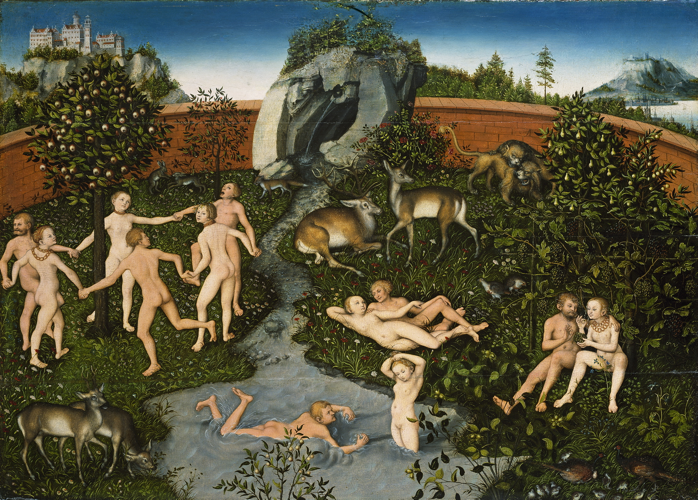
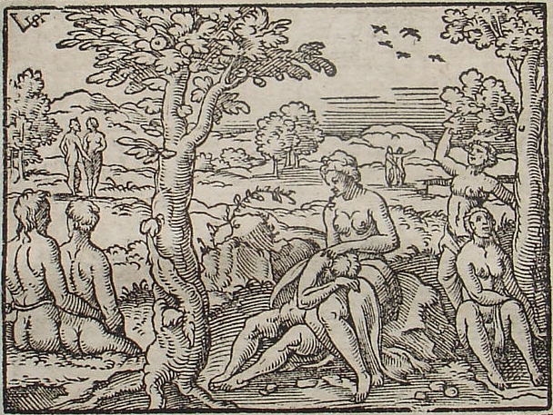
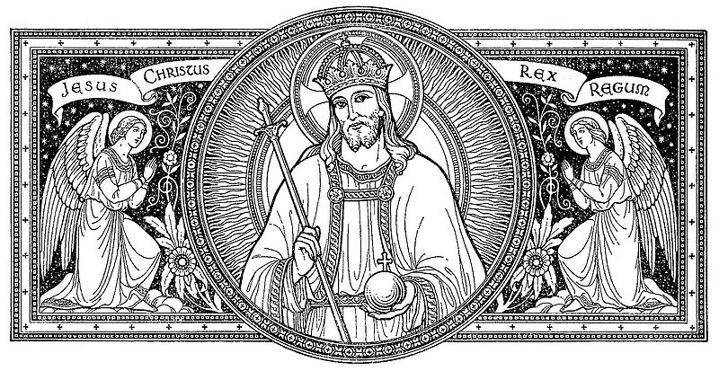

El término edad de oro proviene de la mitología griega y fue recogido por primera vez por el poeta griego Hesíodo. Se refiere al mito respecto a una etapa inicial de las edades del hombre en la que este habría vivido en un estado ideal o utopía, cuando la humanidad era (según se cree) pura e inmortal. En las obras literarias, la edad de oro usualmente acaba con un acontecimiento devastador, que trae consigo la caída del hombre.

La idea de una edad de oro aparece por vez primera en el poema los Trabajos y días de Hesíodo (mitad del siglo VIII a. C.). Según el poeta se trata de la primera edad mítica, el tiempo de «una dorada estirpe de hombres mortales», que «crearon en los primeros tiempos los inmortales que habitaban el Olimpo. Vivieron en los tiempos de Crono, cuando reinaba en el cielo;... » (Trabajos y días, versos 109 y siguientes). Hesíodo describe otras cuatro eras que sucedieron a la edad de oro en orden cronológico: la edad de plata, la edad de bronce, la edad de los héroes y la edad del hierro. La mítica edad de oro descrita por Hesíodo está en la base de «toda la historia del pensamiento griego, alimentando los sueños de los que por diversas razones rechazan el mundo en que viven». La edad de oro no conoce ni la guerra, ni el trabajo, ni la vejez, ni la enfermedad las personas mueren en un sueño pacífico, pues la tierra produce bienes en cantidad suficiente para satisfacer todas las necesidades y, por consiguiente, no hay razón para que surja ningún conflicto, por lo que las personas de la raza de oro llevan una vida tranquila y feliz.
Algunas obras pastorales de ficción representan la vida en una imaginaria Arcadia como continuación de la vida en la edad de oro; los pastores de tales tierras no permitieron que la civilización los corrompiese.
El poeta latino Ovidio también habla de las diferentes edades del hombre en Las metamorfosis. La edad de oro tuvo lugar inmediatamente después de la creación del ser humano cuando Saturno gobernaba el cielo, por lo que igualmente se la llamaba reinado de Saturno: era un tiempo de inocencia, de justicia, de abundancia y de bondad. La Tierra gozaba de una primavera perpetua, y los campos fructificaban sin necesidad de que los cultivasen. Mas Saturno fue lanzado a las tinieblas del Tártaro y Júpiter se convirtió en el amo del mundo, con lo que comenzó la edad de plata.

La Iglesia católica nunca negó el mito de la edad de oro. Los Padres de la Iglesia, sobre todo Agustín de Hipona y san Ambrosio, no dudaban de que en un principio Dios había creado el mundo para que sus riquezas fueran comunes a todos los hombres. Pero el pecado original había destruido este orden natural primitivo, obligando al hombre a trabajar y causando la desigualdad entre los hombres». La Iglesia aceptó esta desigualdad solo una élite de clérigos o laicos podía soñar con encontrar estas formas comunitarias e igualitarias que se encarnaban en la vida monástica», pero a principios del siglo XIV, cuando las bases laica y eclesiástica de la sociedad feudal comienzan a resquebrajarse, la idea de un retorno a la igualdad natural va a presentarse para algunos como la única solución a los males de su tiempo, y el mito de la edad de oro va a verse reforzado con una crítica extremadamente viva de la desigualdad social. Probablemente el movimiento de los taboritas de Bohemia sea el más representativo de esta tendencia. Después de su fracaso renació en Alemania en el siglo XVI bajo el impulso del reformador Thomas Münzer y tuvo su epígono en el movimiento de los anabaptistas de Münster.

Una idea análoga puede encontrarse en las tradiciones religiosas y filosóficas de Asia. Por ejemplo, los Vedás (antiguos textos hinduistas escritos en sánscrito), concebían la historia en forma cíclica, con alternancia entre las edades oscuras y las de oro: satiá iugá (edad de oro), treta iugá (edad de plata), dwapara iugá (edad de bronce) y kali iugá (edad de hierro) se corresponden con las cuatro edades griegas. Creencias similares pueden encontrarse en el antiguo Oriente medio y a través de todo el mundo antiguo.
Según Giorgio de Santillana, que fuera profesor de historia en el MIT y coautor del libro Hamlet's Mill, hay cerca de 200 mitos e historias folclóricas de 30 culturas antiguas que hablan de un ciclo de edades ligadas al movimiento de los cielos. Algunos creyentes utópicos, tanto políticos como religiosos, sostienen que la edad de oro volvería después de un período de decadencia. Otros consideran, en particular los hindúes modernos, que la edad de oro volverá gradualmente como una consecuencia natural de los cambiantes iugás (eras).